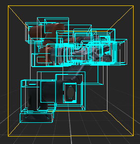
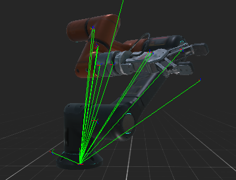

Model Editor

The Model Editor allows the editing of model assets. Double-clicking a Model asset shown in Assets Details will open this editor. The editor is composed of five main parts:
Viewport
Shows the Model with the current configuration. If the model is animated, it will show the current animation state on the animation toolbar.
Toolbar

Assists with the model visualization. It has the following options:
| Item | Description |
|---|---|
 |
Toggles the Grid visualization. |
/  |
Toggles the visualization from Solid (default) to Wireframe.  |
 |
Toggles the Bounding box visualization of the model.  |
 |
Toggles the Hierarchy visualization of the model.  |
 |
Toggles the Normals visualization of the vertices.  |
 |
Toggles the UV checker visualization of the model.  |
 |
Resets the camera position. |
 |
Changes the background color. |
Playback Controls

If the model has animations, the Playback Toolbar allows playing the selected clip.
| Control | Description |
|---|---|
 / /  |
Plays / Stops the current clip animations. |
 |
The timeline slider. The handle will mark the current time in the animation, and its position can be modified. |
 |
Controls the Speed Factor of the reproduction. The default is 1.00. |
Properties
Panel with all the Model properties. They don't depend on the profile.
| Property | Description |
|---|---|
| Swap Swinding Order | Flips the normals of the model when activated. |
| Generate Tangent Space | When checked, generates the tangent coordinates of every vertex. Useful when dealing with normal mapping. |
| Export Animations | For exporting the animation information of the model. |
| Export As Raw | Will export the model as the source file (e.g., .fbx), instead of creating a binary Evergine asset. |
Animation Clip Properties
For every animation contained in the model, the following information will be shown:
| Property | Description |
|---|---|
| Index | The animation order. |
| Name | The name of the clip. This string will be used in the Animation3D when we want to play the animation. |
| Duration | Timestamp of the duration. |